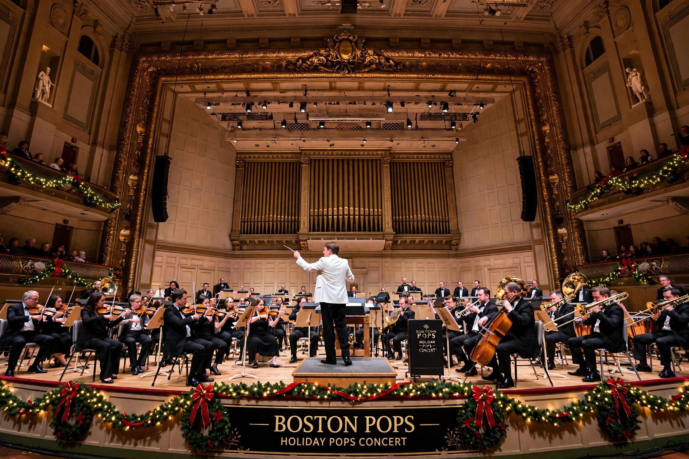

The Boston Pops Orchestra is an American orchestra based in Boston, Massachusetts, specialising in light classical and popular music. It is drawn largely from the Boston Symphony Orchestra and was founded in 1885.
| Boston Pops | |
|---|---|
 | |
| Founded | 1885 |
| Location | Symphony Hall, Boston |
| Conductor | Keith Lockhart (since 1995) |
Arthur Fiedler, conductor 1930–1979, made the Pops world-famous with recordings and the July Fourth Esplanade concerts. John Williams (1980–1993) brought film music prominence. Keith Lockhart continues traditions including Holiday Pops and Evening at Pops.